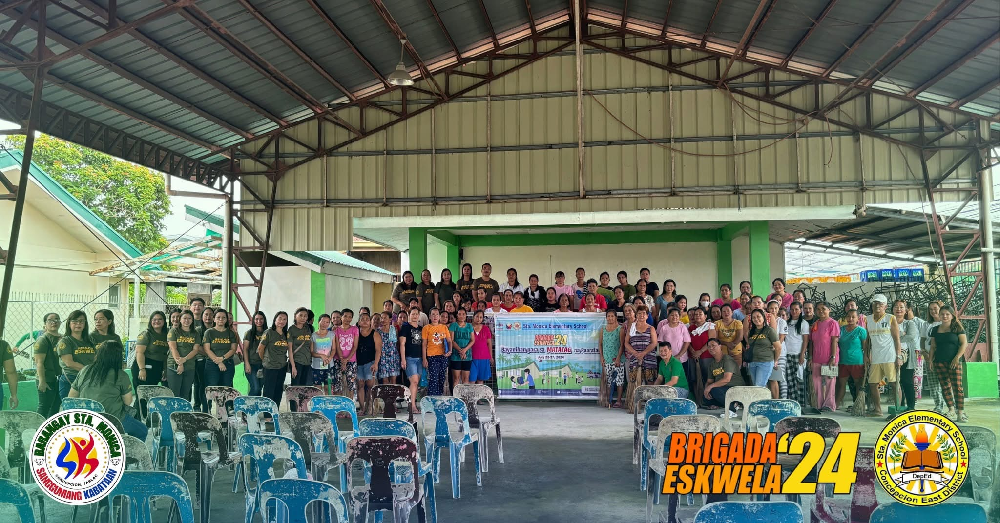
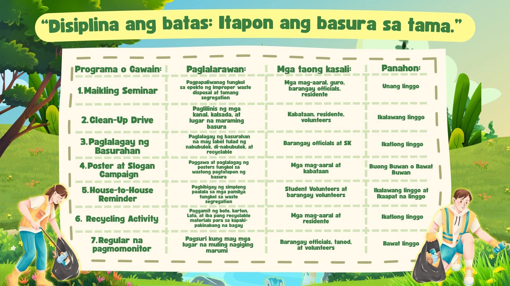
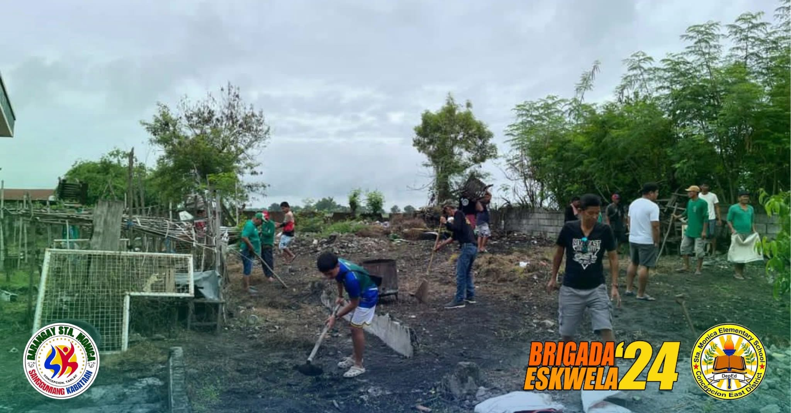

Ang basura ay bahagi na ng ating pang-araw-araw na buhay. Gumagamit tayo ng mga plastik, bote, papel, lata, at iba pang bagay na kalaunan ay nagiging basura. Hindi naman masama ang pagkakaroon ng basura dahil normal itong nangyayari sa bawat tahanan. Ang nagiging problema ay ang maling pagtatapon nito.
Sa Barangay Sta. Monica, Concepcion, Tarlac, makikita ang ilang basurang nakakalat sa gilid ng kalsada, kanal, bakanteng lote, at iba pang lugar. Mayroon ding mga taong nagtatapon ng basura kung saan-saan dahil wala silang dalang lalagyan o hindi nila iniisip ang magiging epekto nito. May ilan din na hindi naghihiwalay ng basura kahit may mga basurang maaaring i-recycle o gamitin muli.
Ang Improper Waste Disposal ay maaaring magdulot ng pagbabara ng kanal, pagbaha, mabahong amoy, pagdami ng langaw, lamok, at daga, pati na rin ang pagkalat ng sakit. Nakasisira rin ito sa kagandahan ng barangay at maaaring makaapekto sa kalusugan ng mga residente.
Bilang mga mag-aaral sa Concepcion Catholic School, nais naming gumawa ng isang simpleng proyekto na makatutulong sa paglutas ng problemang ito. Ang Project Linis-Barangay ay isang kampanya na naglalayong turuan, paalalahanan, at hikayatin ang mga residente na maging responsable sa pagtatapon ng basura.
Ang pangunahing suliranin ng aming proyekto ay ang maling pagtatapon ng basura sa Barangay Sta. Monica.
Kabilang sa mga napapansing problema ang sumusunod:
Layunin ng Project Linis-Barangay na mabawasan ang improper waste disposal at mahikayat ang mga residente ng Barangay Sta. Monica na magkaroon ng wastong gawi sa pagtatapon at pamamahala ng basura.

| Mga Kalahok | Kanilang Tungkulin |
|---|---|
| Barangay Officials | Magbigay ng pahintulot, suporta, lugar, at mga kagamitan. |
| Sangguniang Kabataan | Tumulong sa pag-organisa ng mga kabataan at gawain. |
| Mga Mag-aaral | Gumawa ng posters, tumulong sa seminar, at sumali sa clean-up drive. |
| Mga Guro | Gumabay sa mga mag-aaral at tumulong sa pagbuo ng plano. |
| Mga Magulang | Suportahan ang mga anak at isabuhay ang tamang pagtatapon sa bahay. |
| Mga Residente | Sumunod sa waste segregation at makilahok sa mga gawain. |
| Barangay Tanod | Tumulong sa pagpapaalala at pagmomonitor sa mga lugar. |
| Barangay Health Workers | Magpaliwanag tungkol sa epekto ng maruming kapaligiran sa kalusugan. |
| Mga Tindero | Panatilihing malinis ang paligid ng kanilang tindahan. |
| Youth Volunteers | Tumulong sa information campaign at documentation. |
Layunin: Gagamitin ang mga kagamitang ito para sa clean-up drive, waste segregation, information campaign, at pagtatanim upang mabawasan ang improper waste disposal sa Sta. Monica.
Ito ang batayan upang magawa ng maayos ang proyekto:
| Linggo | Gawain |
|---|---|
| Unang Linggo | Pagpaplano, paghingi ng pahintulot, at pagsasagawa ng seminar |
| Ikalawang Linggo | Clean-up drive sa mga napiling lugar |
| Ikatlong Linggo | Paglalagay ng basurahan at pagsisimula ng recycling activity |
| Ikaapat na Linggo | House-to-House reminder at poster campaign |
| Ikalimang Linggo | Pagmomonitor sa mga lugar na nilinis |
| Ikaanim na Linggo | Pagsusuri ng resulta at paggawa ng report |
| Ikapitong Linggo | Pagbibigay ng mungkahi para maipagpatuloy ang proyekto |
Upang malaman kung naging matagumpay ang proyekto, gagawin ang mga sumusunod:
| Pamantayan | Target | Paraan ng Pagsusuri |
|---|---|---|
| Mga dumalo sa seminar | Hindi bababa sa 50 katao | Attendance sheet |
| Mga lugar na nalinis | Hindi bababa sa 3 lugar | Before-and-after pictures |
| Basurahang nailagay | Hindi bababa sa 5 basurahan | Inspection |
| Mga kabataang sumali | Hindi bababa sa 30 volunteers | Registration list |
| Mga recyclable na nakolekta | Hindi bababa sa 50 kilo | Pagtitimbang |
| Mga poster na nailagay | Hindi bababa sa 10 posters | Documentation |
| Clean-up drive | Dalawang beses bawat buwan | Activity report |
| Lugar na regular na mino-monitor | Mga pangunahing dumping areas | Monitoring form |
Sa pagtatapos ng proyekto, inaasahan namin ang mga sumusunod:
Project LINIS-BARANGAY-isang programang naglalayong turuan at hikayatin ang mga tao na panatilihing malinis ang kapaligiran sa pamamagitan ng wastong pagtatapon ng basura, pakikiisa sa mga gawaing pangkalinisan, at pagiging responsable sa kalikasan.
